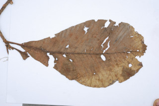
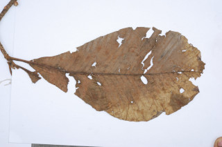

Tall deciduous trees, up to 15 m tall.
15 ಮೀ. ಎತ್ತರದವರೆಗೆ ಬೆಳೆಯುವ ಎಲೆಉದುರುವ ಜಾತಿಯ ಮರಗಳು.
15 മീറ്റര്വരെ ഉയരത്തില് വളരുന്ന ഇലപൊഴിയും മരങ്ങള്.
உயரமான இலையுதிர் மரம், 15 மீ. உயரம் வரை வளரக்கூடியது.
Bark greyish white, peeling off in to flakes.
ತೊಗಟೆ ಬೂದುಮಿಶ್ರಿತ ಬಿಳಿ ಬಣ್ಣದಲ್ಲಿದ್ದು ಚಕ್ಕೆ ರೂಪದಲ್ಲಿ ಸುಲಿಯುವ ಮಾದರಿಯವು.
നരച്ചവെളുത്ത നിറത്തില്, അടര്ന്ന് വീഴുന്ന, പുറംതൊലി.
மரத்தின் பட்டை சாம்பல் கலந்த வெள்ளை நிறம், பெரிய செதில்களாக உதிருபவை.
Leaves simple, alternate, spiral, clustered at twig ends; petiole canaliculate, sheathing at base and leaving annular scar when fall; lamina to 60 x 20 cm, broadly obovate; apex acute or slightly acuminate, base cuneate, margin denticulate with villous teeth, pubescent on midrib and nerves beneath; midrib canaliculate above; secondary_nerves many parallel, ending in to the teeth; tertiary_nerves, percurrent.
ಎಲೆಗಳು ಸರಳವಾಗಿದ್ದು ಪರ್ಯಾಯ ಹಾಗೂ ಸುತ್ತು ಜೋಡನಾ ವ್ಯವಸ್ತೆಯಲ್ಲಿರುತ್ತವೆ ಮತ್ತು ಕುಡಿಕೊಂಬೆಗಳ ತುದಿಯಲ್ಲಿ ಗುಂಪಾಗಿರುತ್ತವೆ;ಎಲೆತೊಟ್ಟು ಕಾಲುವೆ ಗೆರೆಯನ್ನು ಹೊಂದಿರುತ್ತವೆ ಹಾಗೂ ಬುಡಬಾಗದಲ್ಲಿ ಕೋಶ-ಪೊರೆಗಳ ಸಮೇತವಿರುತ್ತವೆ ಮತ್ತು ಉದುರಿದಾಗ ವಲಯಾಕಾರದ ಗುರುತುಗಳನ್ನು ಮೂಡಿಸುತ್ತವೆ;ಪತ್ರಗಳು 60X20 ವರೆಗಿನ ಗಾತ್ರ, ವಿಶಾಲವಾದ ಬುಗುರಿಯಾಕಾರವನ್ನು ಹೊಂದಿದ್ದು ಚೂಪಾದ ಅಥವಾ ತುಸುವಾಗಿ ಕ್ರಮೇಣವಾಗಿ ಚೂಪಾಗುವ ತುದಿ, ಬೆಣೆಯಾಕಾರದ ಬುಡ,ಉದ್ದುದ್ದವಾದ ಮೃದು ರೋಮಗಳನ್ನು ಹೊಂದಿದ ಹಲ್ಲುಗಳನ್ನುಳ್ಳ ದಂತಿತ ಮಾದರಿಯ ಅಂಚನ್ನು ಹೊಂದಿರುತ್ತವೆ;ಮಧ್ಯನಾಳ ಮತ್ತು ಪತ್ರದ ತಳಭಾಗದಲ್ಲಿನ ನಾಳಗಳು ಮೃದುತುಪ್ಪಳದಿಂದ ಕೂಡಿರುತ್ತವೆ;ಮಧ್ಯನಾಳ ಪತ್ರದ ಮೇಲ್ಭಾಗದಲ್ಲಿ ಕಾಲುವೆಗೆರೆಯನ್ನು ಹೊಂದಿರುತ್ತದೆ; ಎರಡನೇ ದರ್ಜೆಯ ನಾಳಗಳು ಅನೇಕವಿದ್ದು ಸಮಾನಾಂತರದಲ್ಲಿದ್ದು ಪತ್ರದ ಅಂಚಿನಲ್ಲಿಯ ಹಲ್ಲು ಗಳಲ್ಲಿ ಕೊನೆಗೊಳ್ಳುತ್ತವೆ;ಮೂರನೆಯ ದರ್ಜೆಯ ನಾಳಗಳು ಎಲೆದಿಂಡಿಗೆ ಅಡ್ಡವಾಗಿ ಕೂಡುವಂತಹವು.
ഇലകള് ലഘുവും ഏകാന്തരമായി, വര്ത്തുളളക്രമത്തില്, തണ്ടിന്റെ അറ്റത്തായി അടുക്കിയിരിക്കുന്നു; ഇലഞെട്ട് ചാലുളളതും, കീഴ്ഭാഗത്ത് പോളയോടുകൂടിയതും, ഇളകി വീഴുമ്പോള് അടയാളം അവശേഷിപ്പിക്കുന്നതുമാണ്; പത്രഫലകത്തിന് 60 സെ.മീ നീളവും 20 സെ.മീ വീതിയും, വീതിയേറിയ അപഅണ്ഡാകാരത്തോടുകൂടിയതുമാണ്; പത്രാഗ്രം നിശിതമോ ലഘുദീര്ഘാഗ്രത്തോടെയുമാണ്, പത്രാധാരം ആപ്പാകാരത്തിലാണ്, അരികുകള് കനത്ത രോമിലമായ, ദന്തിതമാണ്, കീഴ്ഭാഗത്ത് മുഖ്യസിരയിലും മറ്റു ഞരമ്പുകളിലും ലഘുവായി രോമിലമാണ്; മുഖ്യസിരമുകളില് ചാലോടുകൂടിയതാണ്; അരികിലെ ദന്തങ്ങളിലവസാനിക്കുന്ന, സമാന്തരമായിപോകുന്ന ധാരാളം ദ്വിതീയ ഞരമ്പുകള്; ത്രിതീയ ഞരമ്പുകള് പെര്കറന്റ് ആണ്.
இலைகள் தனித்தவை, மாற்றுஅடுக்கமானவை, சுழல் போன்று அமைந்தவை, நுனிக்கிளையில் இலைகள் கூட்டமாக மற்றும் நெருக்கமாகமைந்தவை; இலைக்காம்பு குறுக்குவெட்டுத் தோற்றத்தில் கேனாலிகுலேட், தளத்தில் உறை போன்று தண்டைச் சுற்றி காணப்படும் மற்றும் இலை உதிர்ந்த பின் வட்டவடுக்களை ஏற்படுத்துகின்றன; இலை அலகு 60 X 20 செ.மீ., அகன்ற தலைகீழ் முட்டை வடிவானது, அலகின் நுனி கூரியது அல்லது சிறிய அதிக்கூரிய முனையுடையது, அலகின் தளம் ஆப்பு வடிவானது, அலகின் விளிம்பு பற்களுடையது மற்றும் பற்கள் உரோமங்களுடையது, அலகின் பின்புறத்தில் மையநரம்பு மற்றும் அனைத்து நரம்புகளும் உரோமங்களுடையது; மையநரம்பு அலகின் மேற்புறத்தில் அலகின் பரப்பைவிட பள்ளமானது; இரண்டாம் நிலை நரம்புகள் அதிக எண்ணிக்கையில் ஒன்றுக்கொன்று இணையானவை, பற்கள் வரை சென்று முடிவடைகின்றன; மூன்றாம் நிலை நரம்புகள் பெர்க்கரண்ட்.
Flowers yellow, fascicled on old leafless branches.
ಹೂಗಳುಹಳದಿ ಬಣ್ಣದಲ್ಲಿದ್ದು ಎಲೆಗಳಿಲ್ಲದ ಹಳೆಯ ಕೊಂಬೆಗಳ ಮೇಲೆ ಗುಚ್ಛಗಳಲ್ಲಿರುತ್ತವೆ.
മഞ്ഞനിറമുളള പൂക്കള്, ഇലകൊഴിഞ്ഞ മൂത്തശിഖിരങ്ങളില് കൂട്ടമായുണ്ടാകുന്നു.
மலர்கள் மஞ்சள் நிறமானவை, தொகுப்பாக இலைகளற்ற சிறுகிளைகளில் உண்டாகின்றன.
Globose indehiscent carpels, fleshy, enveloping with thickened fleshy sepals; seeds 1 or 2 per carpel.
ಕಾಯಿಗಳು ಬಿರಿಯದ, ದುಂಡಾಕಾರದ ಅಂಡಕೋಶಗಳಾಗಿದ್ದು,ಮಾಂಸಲವಾಗಿದ್ದು, ಮಂದವಾದ ಪುಷ್ಪಪಾತ್ರೆಯ ಪತ್ರಗಳಿಂದ ಸುತ್ತುವರೆದಿರುತ್ತವೆ;ಒಂದು ಕೋಶದಲ್ಲಿ ಒಂದರಿಂದ ಎರಡು ಬೀಜಗಳಿರುತ್ತವೆ.
കായ, തടിച്ച. മാംസളമായ വിദളങ്ങളാല് ആവരണം ചെയ്യപ്പെട്ട, പൊട്ടിത്തുറക്കാത്ത മാംസളമായ ഗോളാകാര കാര്പെല്ലുകള് ആണ്; ഓരോ കാര്പെല്ലിലും ഒന്നോ രണ്ടോ വിത്തു വീതം.
கோளவடிவானது, வெடிக்காதவை, தடித்த சதைப்பற்றான புல்லி இதழ்களால் மூடப்பட்டவை; விதைகள் ஒர் கார்பல்லில் 1 அல்லது 2 காணப்படும்.


 
